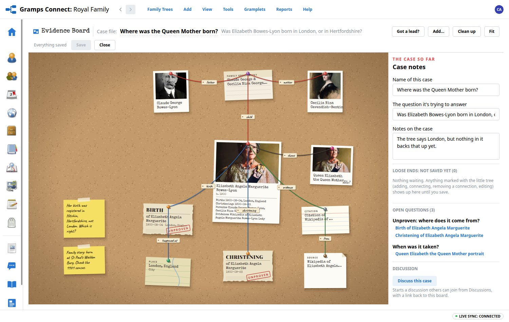
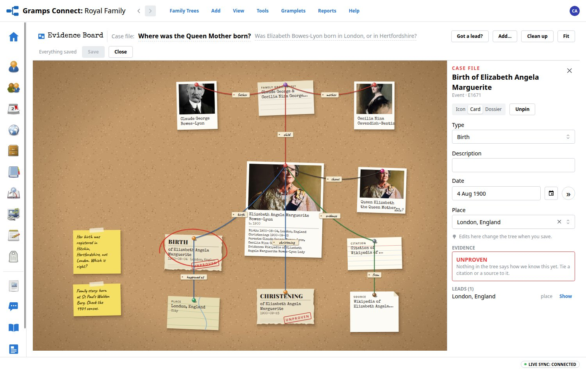
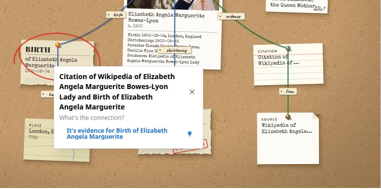
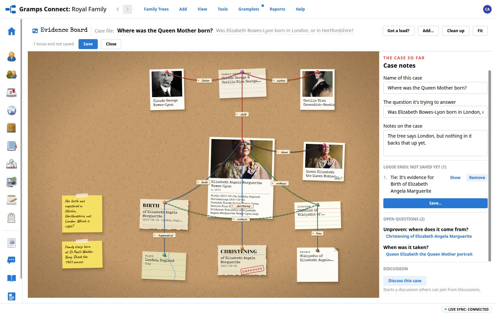
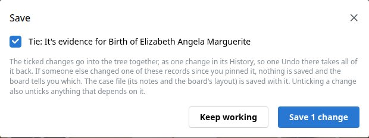
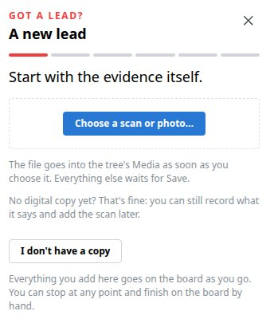
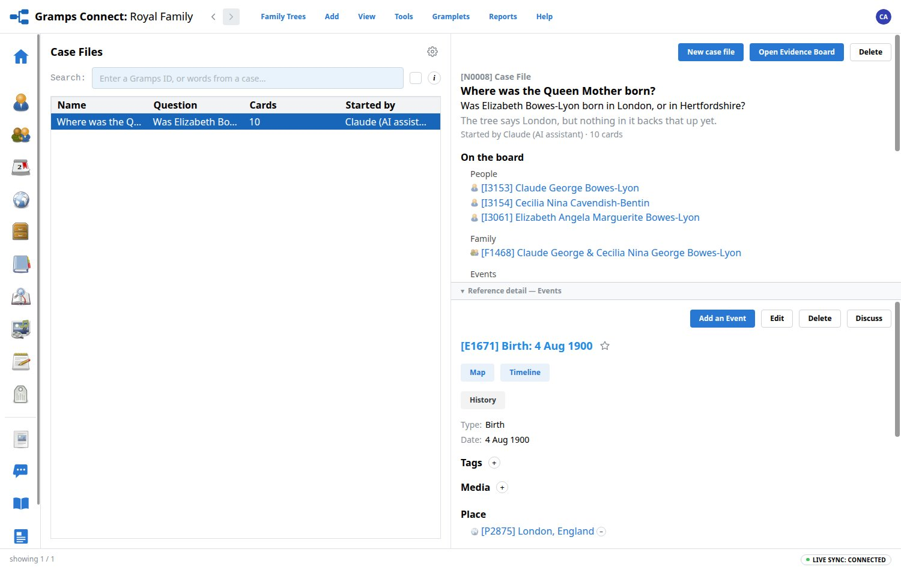

Gramps Connect 1.7: the Evidence Board
Gramps Connect 1.7 is out, and it’s mostly about one new thing: the Evidence Board. It’s a place to work on a single research question the way you might on a real corkboard. You pin up the people and records involved, tie them together with yarn, keep your hunches on sticky notes, and save when the case holds up.

A case file for each question
Every board belongs to a case file. Open Case Files from the navigation rail, click New case file, and give it a name and the question it’s trying to answer: “Who were Ruth Carter’s parents?”, or here, “Was Elizabeth Bowes-Lyon born in London, or in Hertfordshire?”
A new board offers two ways to begin. Find someone in the tree pins records you already have. Got a lead? starts from a photo or a document instead (more on that below).
The case file keeps the board: which records are pinned, where they sit, and the sticky notes. The records themselves stay in your tree, so a case never goes stale. When you open it again, the board loads every record as it is now, and a yellow bar says what changed or was deleted since the case was last saved.
Cards, yarn and sticky notes
Each kind of record is its own kind of paper: an index card for a person, a map for a place, a photo print for a photo, a typed sheet for a source. Every card comes in three sizes, from a small icon to a dossier with more details.
The yarn isn’t decoration. It shows how the records are connected in your tree, and its colour says how: red for family, blue for when and where, green for evidence, grey for photos and notes.
The board also points out what’s missing. An event that nothing in the tree supports gets a red UNPROVEN stamp, and a photo with no date gets a pencilled date?. Both are listed under Open questions in the sidebar, so they’re easy to find.

Sticky notes hold hunches you want to keep in sight, such as “Her birth was registered in Hitchin, Hertfordshire, not London. Which is right?” They’re saved with the case file for anyone who opens it, but they never go into the tree.
Tie things together
To connect two records, drag from one card’s pin to another card and say what the connection is. Here, dragging from the citation to the Birth card offers “It’s evidence for Birth of Elizabeth Angela Marguerite”.

You can do more on the board than tie yarn. You can edit a person’s name or an event’s date and place on its card, identify people in a photo, and add new people, events and places. How is … related to… finds the path between two people, and Pin the people in between lays out the whole chain.
Nothing changes until you save
Everything you do on the board waits as a loose end until you save. The Case notes sidebar lists them in order. Show finds one on the board, Remove takes it out, and Ctrl+Z takes out the last one. A small tree mark on a button tells you that it will change the tree when you save. Buttons without it, like Pin or moving a card, only change the board.

Save shows every loose end with a tick box, so you can leave out the ones you’re not sure of yet. The ticked ones go into the tree together, as one change in its History, so one Undo takes all of it back. If someone else changed one of those records since you opened the board, nothing is saved and the board tells you, instead of writing over their work.

You don’t need Editor rights to work on a board. Anyone who can view the tree can open a case, pin records and arrange them; only saving to the tree needs Editor rights.
Got a lead?

Got a lead? turns one document or photo into records that cite it, by asking a few plain questions: what is it, where did you get it, who’s in it, what was the occasion, and what part did each person play. Every answer goes onto the board as you go, so you can stop at any point and finish by hand. You don’t need to know how Gramps stores sources and citations to use it.
See a case without opening it
Select a case in the Case Files list, and its details show its name, question and notes, the records pinned on it grouped by type, and its sticky notes. Click any record to see its details in the pane below. Names are shown as they are now. Records changed since the case was saved are marked, and deleted ones are crossed out.

And more
- GOQL searches can compare a type with its name, as in
type == 'Census', and Tab completes the names as you type. - Relationship labels are shorter for distant in-laws.
- Help → Gramps Connect Blog, with a dot when there’s a new post.
- The bar between the two detail panes can be dragged to give either one more room.
Try it
- Download Gramps Connect 1.7 for Windows, macOS or Linux, or take the narrated tour.
- The Evidence Board page in the documentation covers everything here in more detail.
- Questions and ideas are welcome on the Gramps Discourse forum.